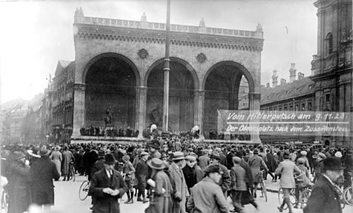

Foto: Bundesarchiv, Bild 119-1426 (fotografo sconosciuto), CC BY-SA 3.0 deHitler prese il potere con un colpo di Stato?
Il colpo di Stato ci fu, e fallì. Il potere arrivò dieci anni dopo, per la porta principale.
Ogni giorno una ricorrenza storica passata al setaccio: il mito che si racconta contro quello che dicono gli storici. Si smontano i miti di tutte le parti, con le fonti citate.

Foto: Bundesarchiv, Bild 119-1426 (fotografo sconosciuto), CC BY-SA 3.0 deIl colpo di Stato ci fu, e fallì. Il potere arrivò dieci anni dopo, per la porta principale.
L'immagine più famosa della rivoluzione più famosa del Novecento è stata girata dopo.
Volevano far saltare re e Parlamento e governare dietro una bambina di nove anni: il ribelle libertario è un mito di secoli dopo.
Su un punto sì, sull'altro no. E il punto falso è quello che ha fatto più strada.
Giusto a metà. Non fu la forza dei fascisti a prendere Roma, ma la resa di chi doveva fermarli.